５ 注射処方
５－１ 注射処方箋参照
（１） 「注射」ボタンをクリックします
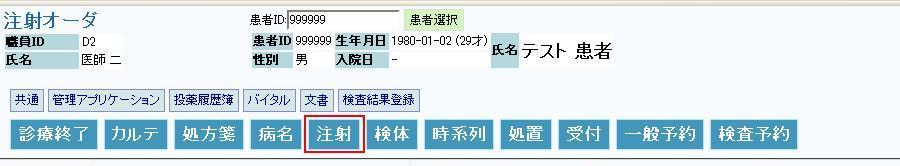
（２） 注射処方オーダ画面が表示されます
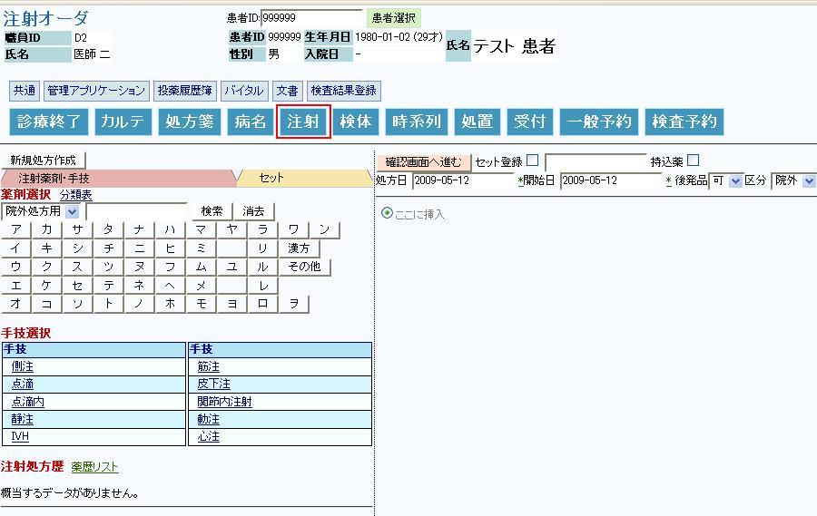
５－２ 注射箋 新規作成
（１） 注射処方する薬剤の先頭名を同じ①
薬剤選択ボタンをクリックします
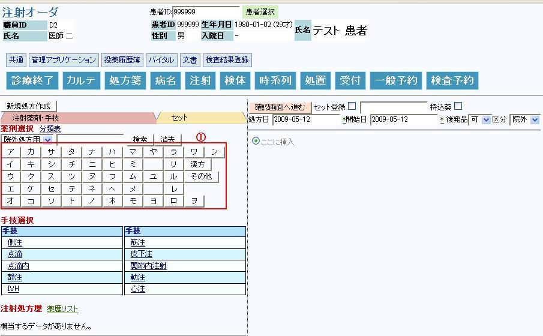
（２） 例えば、①
｢カ｣をクリックしますと、「カ」から始まる薬剤の一覧が表示されます
濁音が有る場合、例えば「ハ」を選択しますと、「ハ」「バ」「パ」の順で表示されます
テキストボックスに直接文字列を入力してから「検索」ボタンを押すことで、絞り込み
検索することも出来ます
（３） 処方する②
薬剤名をクリックします
（４） 画面右側に薬剤がコピーされます
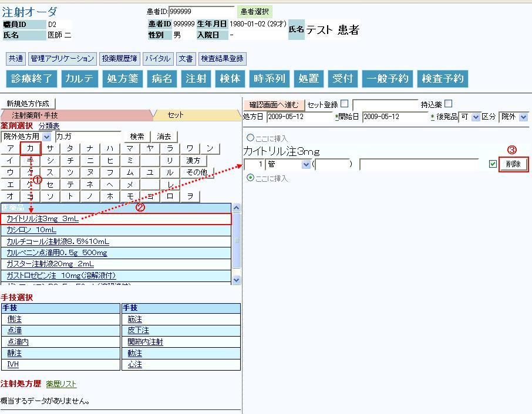
（５） 誤って選択した薬剤は画面右端の③
「薬剤削除」ボタンをクリックすることで、選択を削除する
ことができます
５－３ 薬剤追加方法
（１） 薬剤を追加します
◆ 例えば、「スパスモパン注」を追加します
（２） テキスト入力フィールドに①
｢スパス｣名称の一部を入力します
（３） ②
｢検索｣ボタンをクリックすると該当薬剤が表示されます
（４） 検索結果に表示された薬剤名から、③
「スパスモパン注」をクリックします
（５） 右画面に薬剤がコピーされます
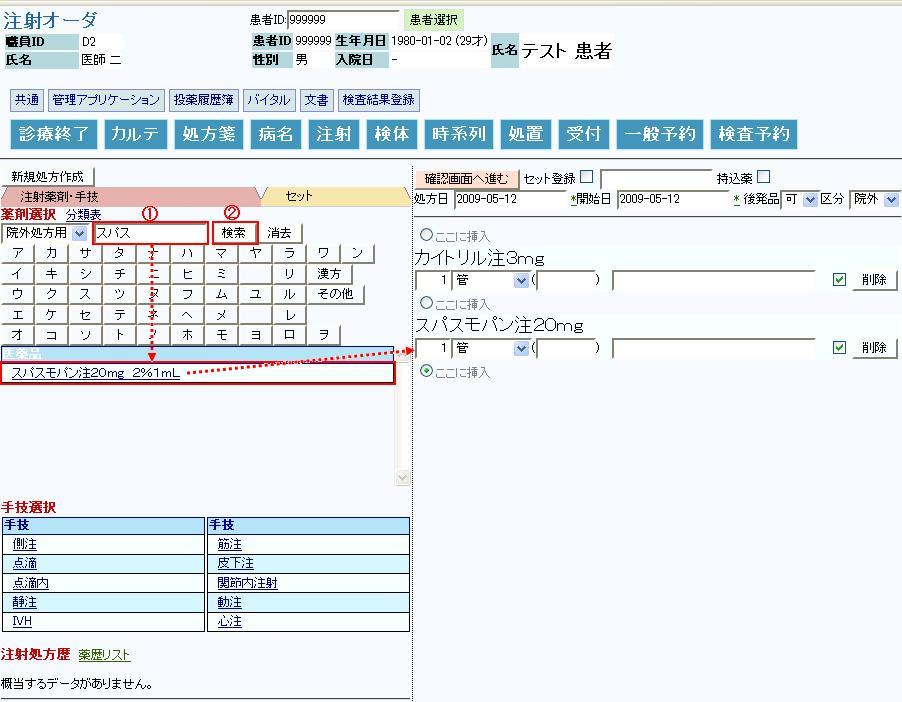
５－４ 手技追加方法 登録方法
（１） 手技を選択します
（２） ①
手技をクリックすると、画面右側に用法がコピーされます
*手技を修正する場合は、②
「用法削除」ボタンを押して再度選択するか、
右画面にコピーされた用法をコンボボックスから直接修正して下さい
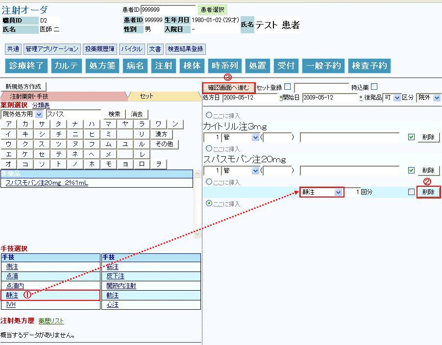
（３） ③
「確認画面へ進む」ボタンをクリックします
（４） 確認画面が表示されます
※Ｄｒは本確認画面で正しく処方されているかの確認を御願い致します。
（５） ①
「医事送信／登録」ボタンをクリックします
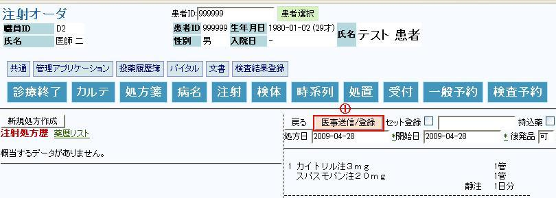
（６） 注射処方内容が登録され、新規作成完了です
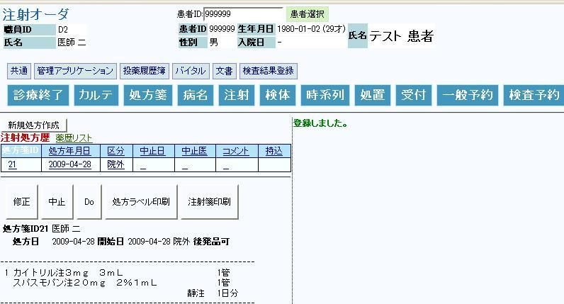
５－５ 注射処方箋の印刷方法
（１） ①
注射箋印刷ボタンをクリックします
（２） ポップアップ画面が起動し注射箋が表示されます
（３） 任意のプリンタを選択します
（プリンタの情報については、管理者に問い合わせてください）
（４） ②プリンタのアイコンをクリックします
注射処方箋がプリンタに出力されます
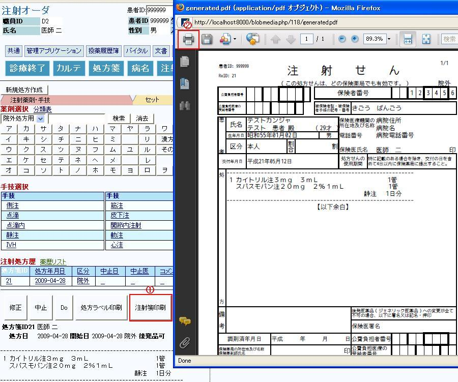
５－６ 注射処方歴からのDo処方
（１） Do処方する注射処方歴をクリックして下さい
（２） 左下記に処方内容が表示されます
（３） Do処方したい処方内容であることを確認して、「Do」ボタンをクリックします
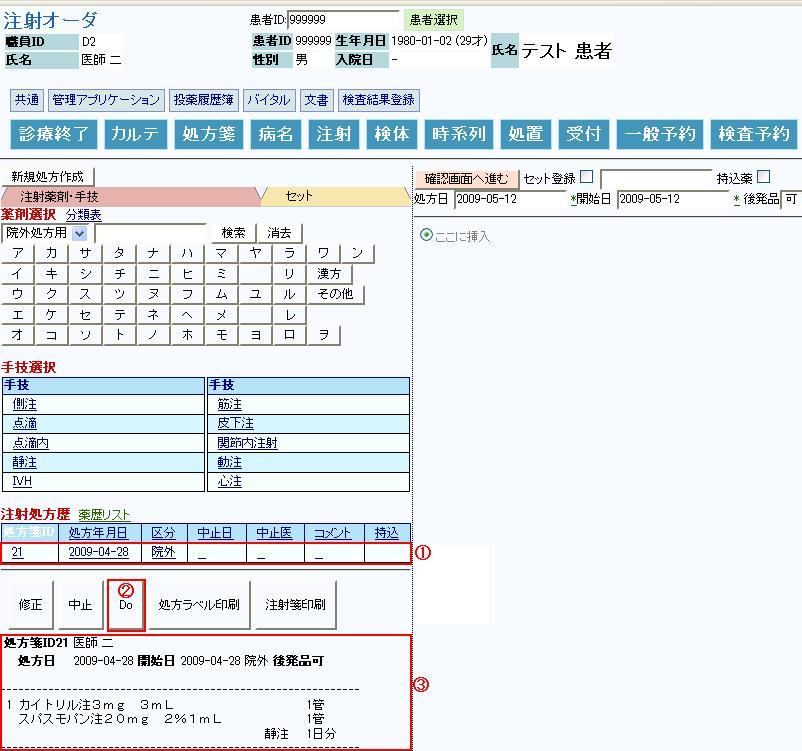
（４） 画面右側に薬剤と手技がコピーされます
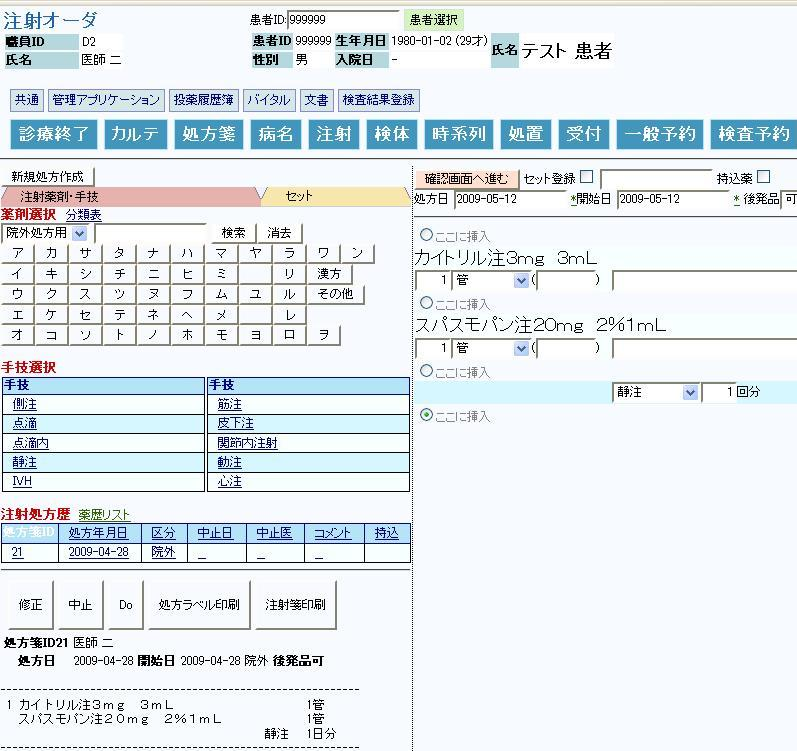
（５） 薬剤を削除する場合は、削除したい薬剤の右端にある①
「削除」ボタンをクリックして
下さい。該当薬剤が画面から削除されます
（６） 手技を削除する場合は、削除したい用法の右端にある②
「用法削除」ボタンをクリックして
下さい。該当用法が画面から削除されます
（７） 追加・変更がなければ③
「確認画面へ進む」ボタンをクリックします
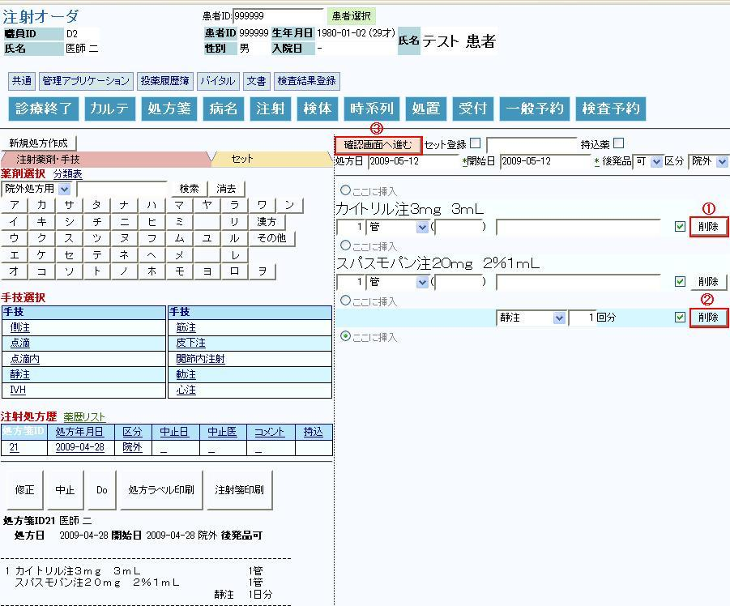
（８） ①
「医事送信／登録」ボタンをクリックします
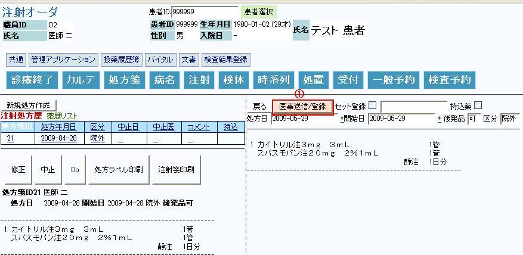
Ｄｒは本確認画面で正しく修正されているかの確認を御願い致します
（９） 注射処方内容が登録されました
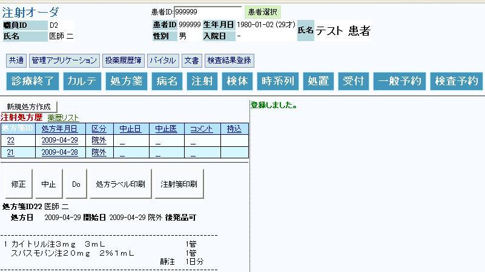
５－７ 注射処方履歴の修正
（１） 既にオーダした注射処方内容を変更します
（２） 修正処方する①
注射処方履歴をクリックして下さい
（３） ③
左下部に処方内容が表示されます
（４） ②
「修正」ボタンをクリックします
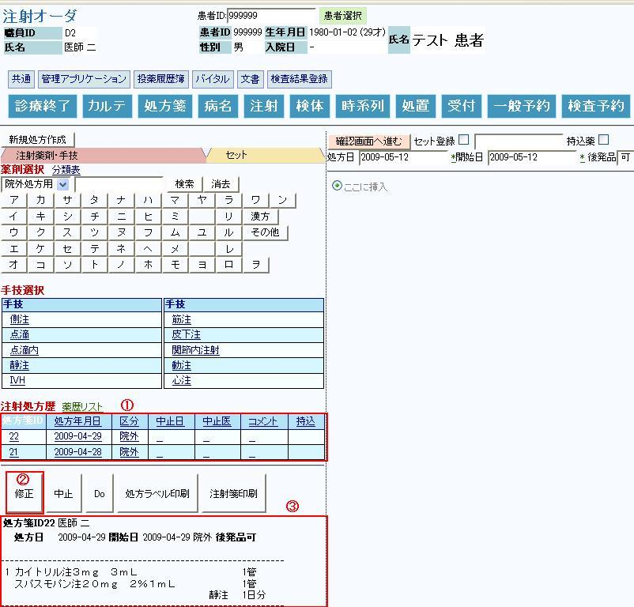
（５） 右画面に、注射、手技が表示されます
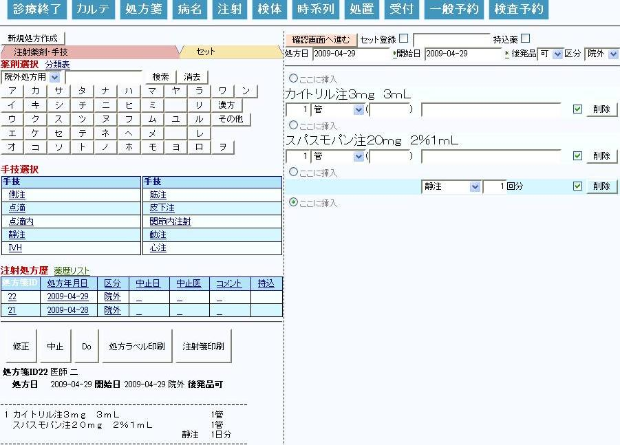
（６） 例えば、①
注射のコメントを入力します
（７） ②
「確認画面へ進む」ボタンをクリックします
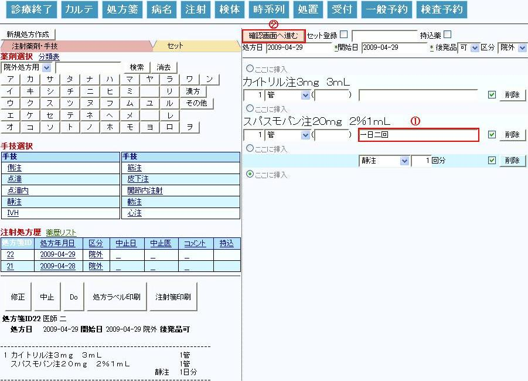
（８） 「処方箋ID**修正」ボタンをクリックします
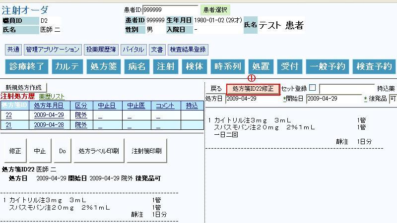
Ｄｒは本確認画面で正しく修正されているかの確認を御願い致します
（９） 注射処方内容が修正されました
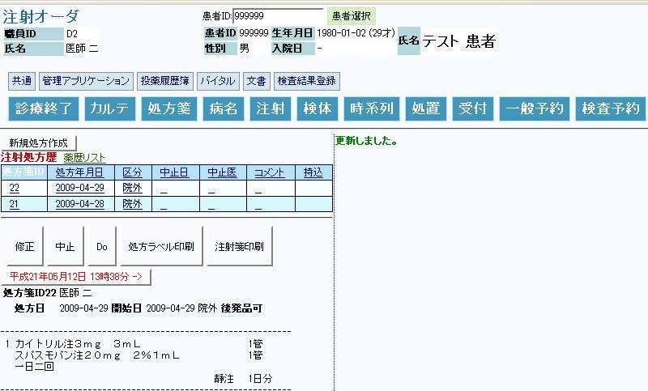